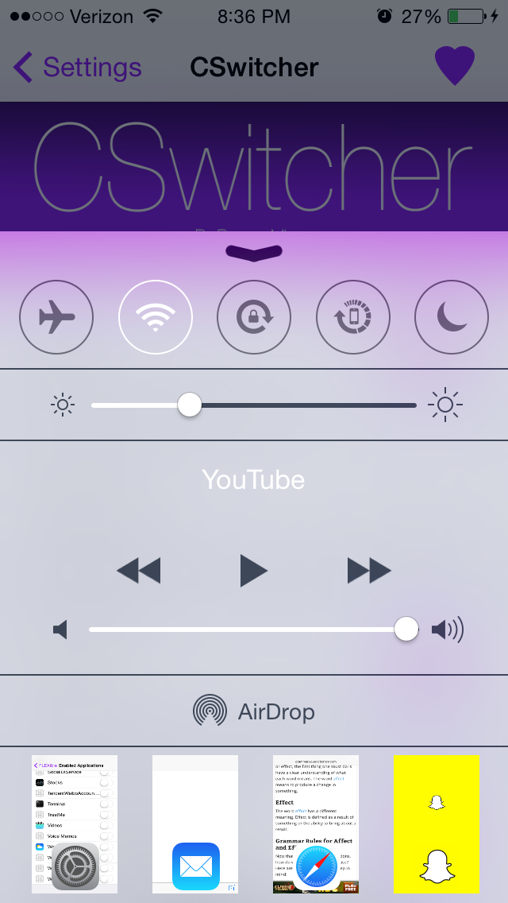
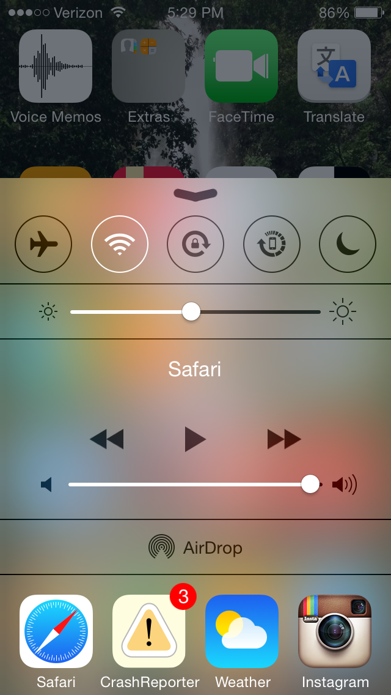
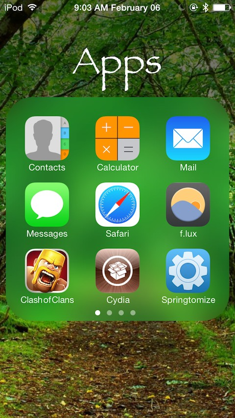
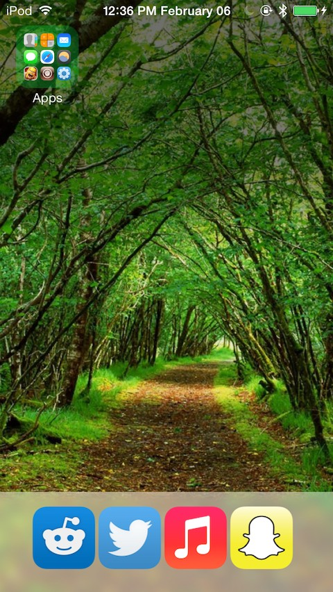
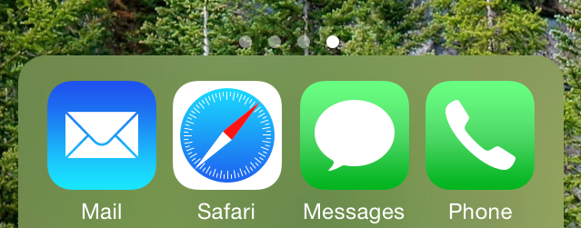

AMPM
AMPM is a simple tweak that shows an AM or PM on the lock screen clock. It is only available on my private repo. This tweak also does not include any preferences.
Current Version: 1.0.0-172
Status: Works on iOS 7. Untested on iOS 8, no current plans for an update.
Price: Free
Anchor
Anchor is a tweak that allows you to place your icons anywhere on your home screen. You no longer need to worry about icons jumping back to the next available spot. Know you can instead place them as you please on your homescreen grid.
Video: Video
Current Version: 0.0.1-633
Status: Open Beta
Price: $0.99
CSwitcher
CSWitcher integrates the app switcher into the control center. The tweak offers multiple customization options. These include showing app previews, page locking, and the ability to choose between 4 and 5 apps shown at a time.

Current Version: 2.0.0-1
Status: iOS 8 compatible, Open Source iOS 7
Source Code: iOS 7 Source
Price: Free
DockWare
DockWare gives you an option to hide and show your dock. It also allows you to show your dock inside an application. There are multiple customization options for animations. It also has a built in auto dismiss timer and you may adjust to which apps the dock appears in.
Video: Video
Current Version: 1.1.0-2
Status: iOS 7 only. iOS 8 Beta soon (DockWare 2).
Price: $1.99
Folder Customizer
Folder Customizer allows you to change the appearance of your folders. You can change the color of the icon, the background when you open it and even the window in which the background is displayed. It also includes some options for changing corner radii and the label appearance above the open folder.

Current Version: 1.2.1-3
Status: iOS 7 compatible. iOS 8 partial compatibility
Price: Free
LockToCell
Simple tweak that locked your icons in the app switcher to the snapshot above them.
Current Version: 1.0.4-1
Status: iOS 7 compatible
Price: Free
Revolver
Revolver let you scroll through your app switcher infinitely. Effectively bringing you right back to the beginning if you hit the end.
Current Version: 1.0.5-1
Status: iOS 7 compatible
Price: $0.99
RoundDock
RoundDock is another simple tweak that rounds the corners of your dock.

Current Version: 1.0.1-1
Status: iOS 8 compatible
Price: Free
Sprint Timer
You can view descriptions of packages I've created under the packages tab. You can also look at tweaks I currently have betas for in the betas tab. I have also linked my twitter and github pages, enjoy!
SwitcherBlur
You can view descriptions of packages I've created under the packages tab. You can also look at tweaks I currently have betas for in the betas tab. I have also linked my twitter and github pages, enjoy!
unBold
You can view descriptions of packages I've created under the packages tab. You can also look at tweaks I currently have betas for in the betas tab. I have also linked my twitter and github pages, enjoy!